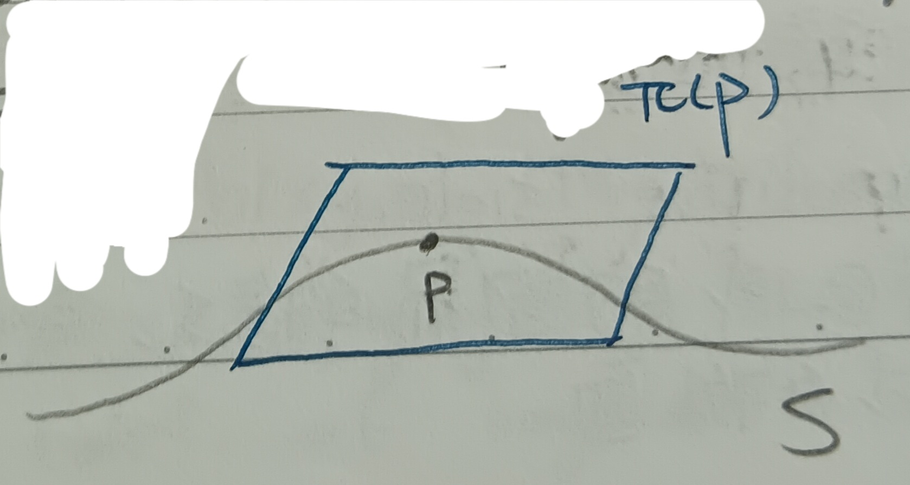
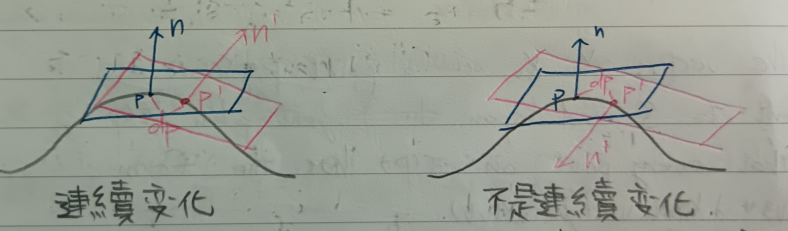
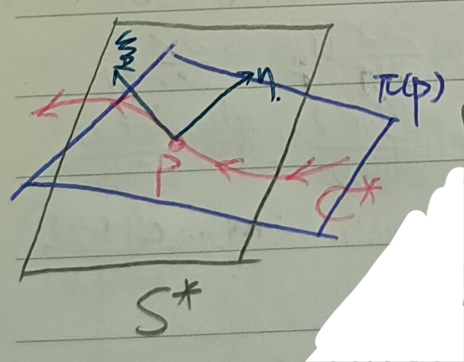
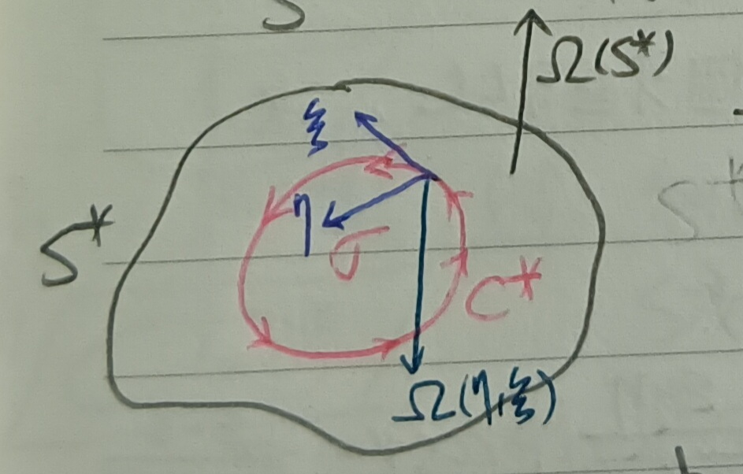
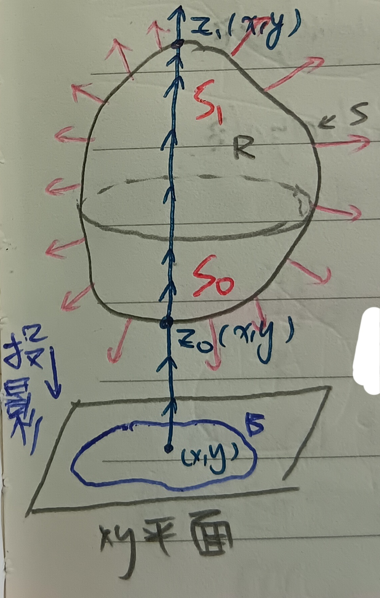
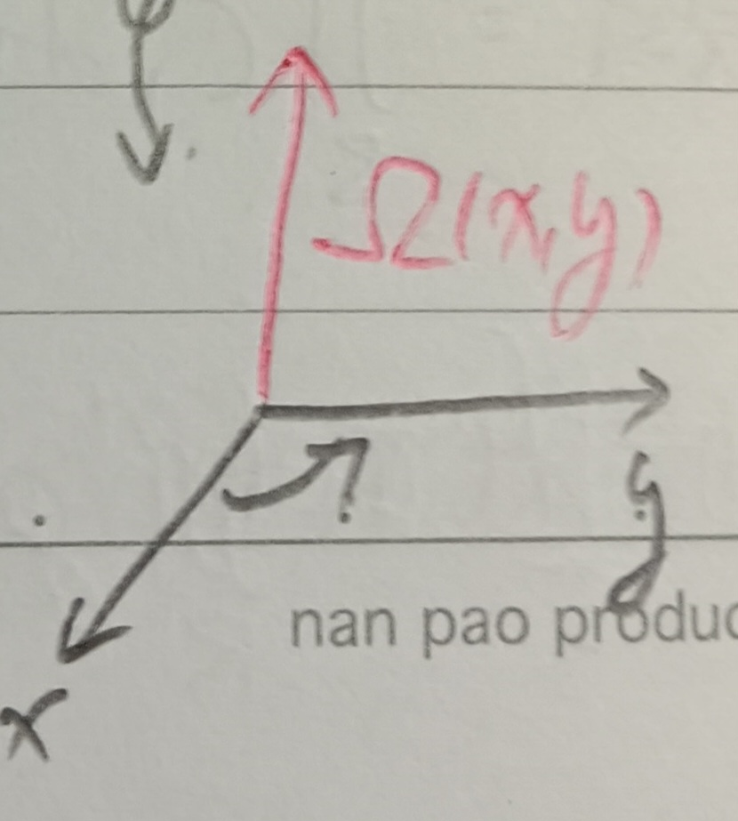
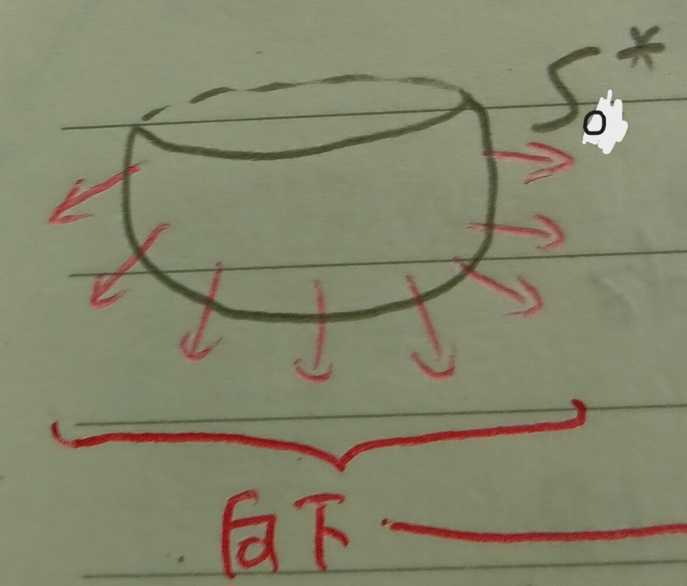
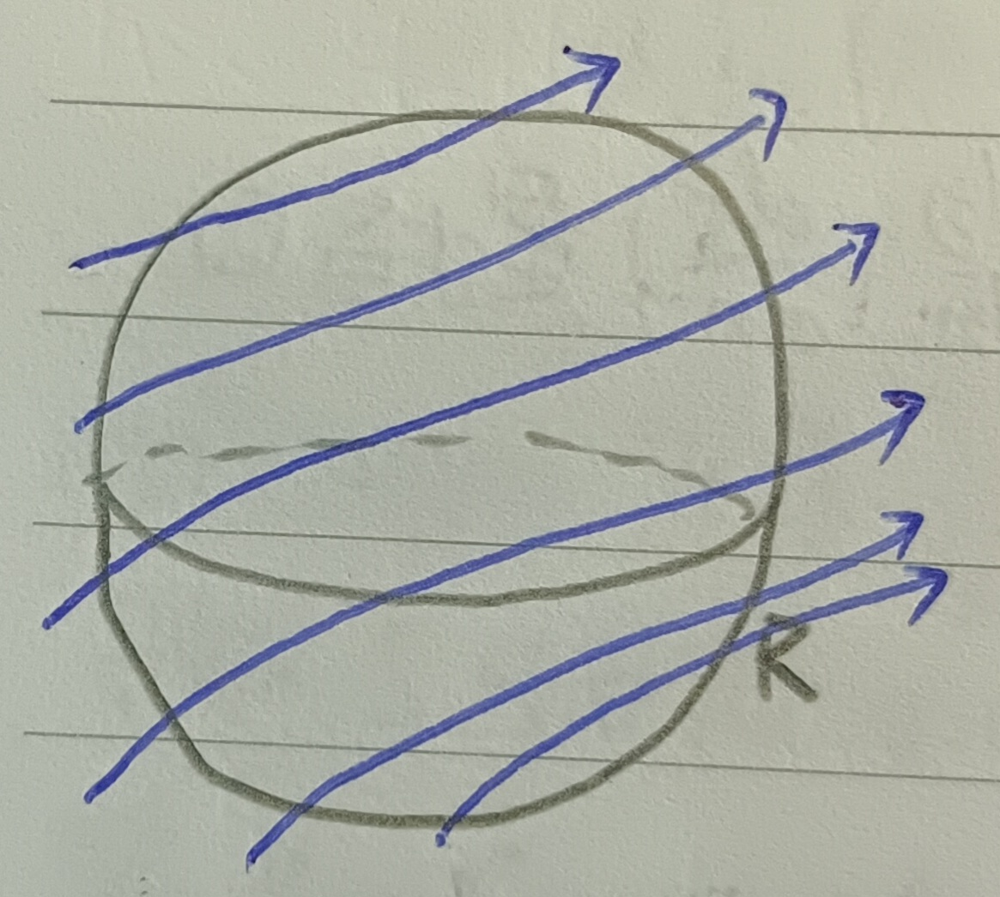

這份筆記是關於曲面的定向與高斯定理的三維版本。
曲面的定向
定義 1：正規表示 (Regular Representation)
給定函數\(X:R\subseteq\mathbb{R}^2\to\mathbb{R}^3\)。我們把\(X\)寫成 \[ X=(x,y,z)=(x(u,v),y(u,v),z(u,v))=X(u,v), (u,v)\in R \] 若兩函數\(X_u=(x_u,y_u,z_u), X_v=(x_v,y_v,z_v)\)都連續且線性獨立(i.e. 外積\(X_u\times X_v\neq 0\))，則稱\(X\)是正規的。
定義 2：曲面 (Surface)
我們稱\(\mathbb{R}^3\)空間中的點集\(S\)為一曲面，若其可由一個正規的\(X\)表示。
(有時候，我們也會稱這樣的\(S\)是正規曲面。)
註記 3
可以發現向量\(X_u, X_v\)和曲面\(S\)在\(p=X(u,v)\)相切(細節可以看這裡的定義16)，這兩個向量可以張出一個平面\(\pi(p)\)，這是\(S\)過\(p\)的切平面。這個平面可以表為 \[ \pi(p):X(u,v)+\lambda X_u(u,v)+\mu X_v(u,v) \]
定義 4：切平面的定向 (Orientation of a Tangent Plane)
考慮正規曲面\(S\)，我們可以藉由選定\(\pi(p)\)的定向來定義\(S\)的定向(見下圖1)。
我們希望\(\pi(p)\)的定向是連續的(稍後會仔細定義這件事)。我們將定向的切平面記為\(\pi^*(p)\)。考慮\(\pi(p)\)上的兩個線性獨立的向量\(\xi(p),\eta(p)\)。我們可以用有序對\((\xi(p),\eta(p))\)來定義\(\pi(p)\)的定向，即 \[
\Omega(\pi^*(p))=\Omega(\xi(p),\eta(p))
\] 更進一步說，我們可以將\(\pi(p)\)的定向定為 \[
\frac{\xi\times\eta}{|\xi\times\eta|}
\] 這是一個和切平面垂直的單位向量，所以任意其他的\(\pi(p)\)上的線性獨立向量\((\xi',\eta')\)要不和\((\xi,\eta)\)給出相同的定向，要不就是恰反方向。而要給出相同定向的話，必須有
\[
(\xi\times\eta)\cdot(\xi'\times\eta')=\left|
\begin{array}{cc}
\xi\cdot\xi' & \xi\cdot\eta'\\
\eta\cdot\xi' & \eta\cdot\eta'
\end{array}
\right|>0
\] 我們將上述行列式值記為\([\xi,\eta,\xi',\eta']\)。
接著，我們回到我們希望我們定義的\(\pi(p)\)的定向是連續的這件事，我們現在定義這句話的意思：
定義 4-1：連續變化 (Vary Continuously)
我們說定向\(\Omega(\pi^*(p))\)是連續變化的，若法向量\(\frac{\xi\times\eta}{|\xi\times\eta|}\)在\((u,v)\)變化時是連續的 i.e. 不會有時候指上有時候指下(見下圖2)。
註記 4-2
任意一點上的法向量\(\xi\)都是個切平面的定向。
接著，我們可以用切平面的定向來定義曲面的定向。
註記 5
一般來說，我們在定義曲面定向時會約定兩件事：
1.
我們希望任意一點上的單位法向量\(\xi\)都是指向有向曲面的正方向的(我們稍後會仔細定義這件事)。
2. 我們希望若\(S\)是某區域的邊界的話，則\(S\)的正定向指向該區域的外面(見下圖3)。
定義 6：曲面的定向 (Orientation of a Surface)
我們記有向的曲面為\(S^*\)。若我們可以幫\(S\)的切平面用定義4的方式定義定向的話，則我們令\(S^*\)的正方向為 \[ \Omega(S^*)=\Omega(X_u,X_v) \]
註記 6-1
若有令一種參數系統\((u',v')\)，則 \[ X_u\times X_v=\frac{\partial(u',v')}{\partial(u,v)}(X_{u'}\times X_{v'}) \] (證略)也就是說，若雅可比行列式是正的，則\((u,v)\)會和\((u',v')\)定出一樣的定向。
定義 7：曲面上曲線的定向 (Orientation of a Curve on a Surface)
令\(C^*\)是\(S\)上的定向曲線，並令\(\xi\)是和\(C^*\)上一點\(p\)相切且指向\(C^*\)的正方向的向量，則令\(\eta\)為\(\pi(p)\)(\(S\)過\(p\)的切平面)上的一個向量。若 \[ \Omega(\eta,\xi)=\Omega(S^*) \] 我們也說\(\eta\)指向\(C^*\)的正向(見下圖4)。
特別的，若\(S^*\)上有一個區域\(\sigma\)，則可以用上面的定義反過來定義\(\sigma\)的邊界\(C^*\)的方向。也就是說，我們令\(C^*\)的方向為使得\(\sigma\)待在\(C^*\)的負側的方向(見下圖5)。
註記 7-1：曲線定向的一維類比
其實黎曼和 \[ \int_a^b f(x)dx=\sum f(x_i)\Delta x_i \] 裡的\(\Delta x_i\)也是有定向的。令\(I^*=[a,b]\)，則\(\int_a^b f=\int_{I^*}f\)，而 \[ \int_b^a f=\int_{-I^*}f=-\int_{I^*}f \] 所以才有\(\int_a^b f=\int_a^c f+\int_c^b f\)(見這裡的定理2與註記2-1)。
定向曲面上的積分
定義 8：二次可微微分形式 (Second Order Differentiable Differential Form)
考慮 \[ w=a(x,y,z)dydz+b(x,y,z)dzdx+c(x,y,z)dxdy \] 若\(a(x,y,z), b(x,y,z), c(x,y,z)\)都有連續導數，則稱\(w\)是二次可微的。
註記 9
由上定義2我們知道正規曲面\(S^*\)可以被表為 \[ x=x(u,v), y=y(u,v), z=z(u,v) \] 其中\((u,v)\in R^*\subseteq\mathbb{R}^2\)。在定義8中考慮\(w=Kdudv\)，則 \[ K=\frac{w}{dudv}=a\frac{\partial(y,z)}{\partial(u,v)}dudv+b\frac{\partial(z,x)}{\partial(u,v)}dudv+c\frac{\partial(x,y)}{\partial(u,v)}dudv \] 於是 \[ \begin{aligned} \iint_{S^*}w&=\iint_{S^*}adydz+bdzdx+cdxdy\\ &=\iint_{R^*}\left(a\frac{\partial(y,z)}{\partial(u,v)}dudv+b\frac{\partial(z,x)}{\partial(u,v)}dudv+c\frac{\partial(x,y)}{\partial(u,v)}dudv\right)dudv \end{aligned} \]
註記 10
參考這裡的定理2，我們考慮\(\iint_S fd\sigma\)，其中\(d\sigma\)是一小塊曲面的面積。我們已知\(S\)可以表示為 \[ x=x(u,v), y=y(u,v), z=z(u,v) \] 而當\(z=\phi(x,y)\)時，有 \[ dS=\sqrt{1+\left(\frac{\partial\phi}{\partial x}\right)^2+\left(\frac{\partial\phi}{\partial y}\right)^2} \] 我們令\(D=\frac{\partial(x,y)}{\partial(u,v)}\)。並且由鏈鎖律有 \[ \frac{\partial z}{\partial x}=\frac{\partial z}{\partial u}u_x+\frac{\partial z}{\partial v}v_x, \frac{\partial z}{\partial y}=\frac{\partial z}{\partial u}u_y+\frac{\partial z}{\partial v}v_y \] 於是 \[ \sqrt{1+\left(\frac{\partial\phi}{\partial x}\right)^2+\left(\frac{\partial\phi}{\partial y}\right)^2}=\frac{1}{D}\sqrt{\xi^2+\eta^2+\tau^2} \] 其中 \[ \xi=\frac{\partial(y,z)}{\partial(u,v)}, \eta=\frac{\partial(z,x)}{\partial(u,v)}, \tau=\frac{\partial(x,y)}{\partial(u,v)} \] 但\(d\sigma\)轉去\((u,v)\)的世界又要乘以一個雅可比行列式，故 \[ d\sigma=D\times\frac{1}{D}\sqrt{\xi^2+\eta^2+\tau^2}dudv=\sqrt{\xi^2+\eta^2+\tau^2}dudv \] 於是 \[ \iint_S fd\sigma=\iint_R f\sqrt{\xi^2+\eta^2+\tau^2}dudv \]
註記 11
沿用註記10的符號，我們令 \[ \cos\alpha=\frac{\epsilon\cdot\xi}{\sqrt{\xi^2+\eta^2+\tau^2}}, \cos\beta=\frac{\epsilon\cdot\eta}{\sqrt{\xi^2+\eta^2+\tau^2}}, \cos\gamma=\frac{\epsilon\cdot\tau}{\sqrt{\xi^2+\eta^2+\tau^2}} \] 其中\(\epsilon=\pm 1\)，定義方式為 \[ \Omega(S^*)=\epsilon\Omega(X_u,X_v) \] 於是，沿用註記9的符號，有 \[ \begin{aligned} K&=\frac{w}{dudv}\\ &=a\frac{\partial(y,z)}{\partial(u,v)}dudv+b\frac{\partial(z,x)}{\partial(u,v)}dudv+c\frac{\partial(x,y)}{\partial(u,v)}dudv\\ &=a\xi+b\eta+c\tau\\ &=\left(a\frac{\xi}{\sqrt{\xi^2+\eta^2+\tau^2}}+b\frac{\eta}{\sqrt{\xi^2+\eta^2+\tau^2}}+c\frac{\tau}{\sqrt{\xi^2+\eta^2+\tau^2}}\right)\sqrt{\xi^2+\eta^2+\tau^2}\\ &=\epsilon(a\cos\alpha+b\cos\beta+c\cos\gamma)\sqrt{\xi^2+\eta^2+\tau^2} \end{aligned} \] (因為\(\epsilon^2=1\))於是，由註記10， \[ \begin{aligned} \iint_{S^*}w&=\iint_{R^*}Kdudv\\ &=\epsilon\iint_R Kdudv\\ &=\iint_R(a\cos\alpha+b\cos\beta+c\cos\gamma)\sqrt{\xi^2+\eta^2+\tau^2}dudv\\ &=\iint_S (a\cos\alpha+b\cos\beta+c\cos\gamma)d\sigma \end{aligned} \] 於是，我們就有一條類似散度定理(這裡的定理6)的式子： \[ \iint_{S^*}w=\iint_S A\cdot nd\sigma \] 其中\(A=(a,b,c)\)，而\(n=\left(\frac{dx}{dn},\frac{dy}{dn},\frac{dz}{dn}\right)\)是指向\(S^*\)正向的法向量。於是，\(S^*\)的定向就好像消失了。
三維高斯定理
定理 12：三維高斯定理 (Three-Dimensional Gauss' Theorem)
令\(R\)是\(\mathbb{R}^3\)中的一個有界區域，並有曲面邊界\(S\)。則給定函數\(a(x,y,z)\), \(b(x,y,z)\), \(c(x,y,z)\)，有 \[ \iiint_R (a_x+b_y+c_z)dxdydz=\iint_{S^*}a(x,y,z)dydz+b(x,y,z)dzdx+c(x,y,z)dxdy \]
證明：和我們前面證高斯定理時一樣(這裡的定理3)，假設一條垂直線(和\(z\)軸平行的線)只會和\(S\)相交至多兩次(見下圖6)，並考慮\(a=b=0\)。
各項符號的定義類似前面二維高斯定理的證明，則 \[ \begin{aligned} \iiint_R c_zdxdydz&=\iint_B dxdy\int_{z_0(x,y)}^{z_1(x,y)}c_zdz\\ &=\iint_B(c(x,y,z_1(x,y))-c(x,y,z_0(x,y))dxdy\mbox{ (☆)} \end{aligned} \] 令\(c_1=c(x,y,z_1(x,y))\), \(c_0=c(x,y,z_0(x,y))\)。並令 \[ S_1=\{(x,y,z_1(x,y)):x,y\in B\}, S_0=\{(x,y,z_0(x,y)):x,y\in B\} \] 則 \[ \iint_{S^*}cdxdy=\iint_{S^*_1}cdxdy+\iint_{S^*_0}cdxdy\mbox{ (★)} \] 我們在這個座標系下考慮朝向上的\(\Omega(x,y)\)(見下圖7)。
而\(S_0^*\)的定向指向下(見下圖8)。由註記11有 \[ \iint_{S_0^*}cdxdy=\iint_{S_0}c\cos\gamma d\sigma=\iint_Bc_0\cos\gamma\sqrt{\xi^2+\eta^2+\tau^2}dxdy \]
由定義，這就是 \[ \iint_B c_0\epsilon\cdot\tau dxdy \] 而\(\tau=\frac{\partial(x,y)}{\partial(x,y)}=1\)，且\(\epsilon\)是 \[ \Omega(S_0^*)=\epsilon(\Omega(X_x,X_y)), \epsilon=\pm 1 \] 由\(X=(x,y,z)=(x,y,z_0(x,y))\)，我們可以算出 \[ \begin{aligned} X_x=(1,0,z_{0x})&,X_y=(0,1,z_{0y})\\ X_x\times X_y=&(-z_{0x},-z_{0y},1) \end{aligned} \] 可以發現\(X_x\times X_y\)是指向上的，和\(S_0^*\)的定向相反，故\(\epsilon=-1\)，即 \[ \iint_{S_0^*}cdxdy=-\iint_B c_0dxdy \] 同理 \[ \iint_{S_1^*}cdxdy=\iint_B c_1dxdy \] 於是，套回上(★)式，有 \[ \iint_{S^*}cdxdy=\iint_B c_1dxdy-\iint_B c_0dxdy \] 回到(☆)式，有 \[ \iiint_R c_zdxdydz=\iint_B c_1dxdy-\iint_B c_0dxdy=\iint_{S^*}cdxdy \] 類似二維高斯定理的證明過程，同理推到\(a,b\)非零的狀況上，再推到一般曲面的狀況上，就證完了此定理。QED
例 12-1：流體的質量守恆與微分方程 (Mass Conservation and Differential Equation of Fluid)
令\(A=(a,b,c)\)為某流體的動量向量場，該流體在時間\(t\)、空間\((x,y,z)\)處的密度記為\(\rho(x,y,z,t)\)，並令其速度向量場為\(\mathbb{v}=(u,v,w)\)(這裡\(a,b,c,u,v,w\)吃的變數都是\((x,y,z,t)\))。則我們有 \[ A=\rho\mathbb{v} \] (流體的動量在計算上一般使用的是每單位體積該流體的動量)則考慮如下圖9的區域，每單位時間從該區域內經過某一小塊區域邊界曲面\(\Delta\sigma\)流至該區域外的流體質量大約為 \[ \rho \mathbb{v}_n\Delta\sigma \] 其中\(\mathbb{v}_n\)為與\(\Delta\sigma\)垂直且同定向(向外)的法方向速度。
則整個\(R\)上的總流出量即為 \[
\iint_{S^*} \rho\mathbb{v}_nd\sigma=\iiint_R \mbox{div }A\;dxdydz\mbox{
(高斯定理)}
\] 其中\(S^*\)為指向\(R\)外側的邊界曲面(因為\(\mathbb{v}_n\)已經指向外面了，所以要算「流出量」就不用加負號)。
而\(R\)中流體減少的速率為 \[
-\frac{d}{dt}\iiint_R \rho(x,y,z,t)dxdydz=\iiint_R-\rho_t(x,y,z,t)dxdydz
\]
(質量變化量是負的，所以對時間的微分是負的，但「減少量」應該要是正的，所以前面加了負號)這應該要和上面推導出的單位時間流出量相等，即
\[
\iiint_R-\rho_t(x,y,z,t)dxdydz=\iiint_R(\mbox{div }\rho\mathbb{v})dxdydz
\] 令\(R\)非常小以致於趨近一個點，則 \[
\rho_t+\mbox{div }\rho\mathbb{v}=0
\] 即 \[
\rho_t+\frac{\partial}{\partial
x}(\rho\mathbb{v})+\frac{\partial}{\partial
y}(\rho\mathbb{v})+\frac{\partial}{\partial z}(\rho\mathbb{v})=0
\]
定理 12-2
由高斯定理，若有一三維區域\(R\)，其邊界為\(S\)，則可求\(R\)體積為 \[ V=\iiint_R dxdydz=\iint_{S^*}zdxdy=\iint_{S^*}xdydz=\iint_{S^*}ydzdx \]
定理 12-3：三維散度定理 (Three-Dimensional Divergence Theorem)
令\(A=(a,b,c)\)，其中\(a,b,c\)都是\((x,y,z)\)的函數，則結合註記11可以把高斯定理表示成 \[ \iiint_R\mbox{div }A\;dxdydz=\iint_S A\cdot nd\sigma \]
定理 12-4
若有微分形式 \[ \begin{aligned} w&=a(x,y,z)dydz+b(x,y,z)dzdx+c(x,y,z)dxdy\\ dw&=(a_x+b_y+c_z)dxdydz \end{aligned} \] 則高斯定理可表作 \[ \iiint_R dw=\iint_{S^*} w \]
例 12-5
在三維散度定理(定理12-3)中令\(A=(au,bv,cw)\)，其中\(u,v,w\)也是函數，則 \[ \iiint_R(au_x+bu_y+cu_z)dxdydz=\iint_S \left(au\frac{dx}{dn}+bv\frac{dy}{dn}+cw\frac{dz}{dn}\right)d\sigma-\iiint_R(a_xu+b_yv+c_zw)dxdydz \] 再來，如果令\(u=v=w=U\)，並令\(a=V_x\), \(b=V_y\), \(c=V_z\)，則 \[ \iiint_R(U_xV_x+U_yV_y+U_zV_z)dxdydz=\iint_S U\frac{dV}{dn}dS-\iiint_R U\Delta Vdxdydz\mbox{ (✪)} \] 其中\(\Delta V\)是拉普拉斯算符\(\Delta V=V_{xx}+V_{yy}+V_{zz}\)(見這裡的定義7)，且這裡 \[ \frac{dV}{dn}=V_x\frac{dx}{dn}+V_y\frac{dy}{dn}+V_z\frac{dz}{dn} \] 在(✪)式中將\(U,V\)互換，就可整理得到底下這條看起來像格林定理(這裡的定理8)的式子： \[ \iiint_R(U\Delta V-V\Delta U)dxdydz=\iint_S\left(U\frac{dV}{dn}-V\frac{dU}{dn}\right)d\sigma \] 若令\(V=1\)，則 \[ \iiint_R\Delta Udxdydz=\iint_S\frac{dU}{dn}d\sigma=\iint_S(\mbox{grad }U)\cdot nd\sigma \] 其中\(\mbox{grad }U\)是\(U\)的梯度，其定義可以參見這裡的定義20。